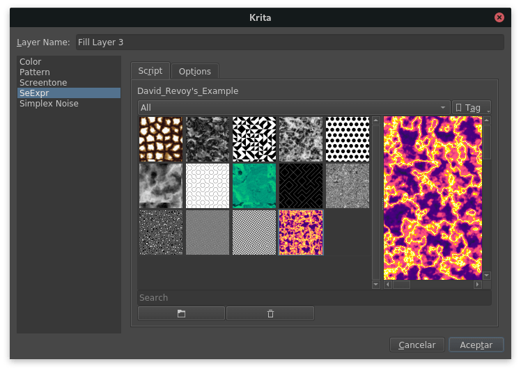
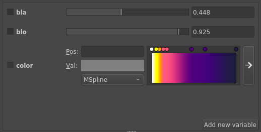

SeExpr¶
在 4.4 版本新加入.
使用迪士尼動畫的 SeExpr 表達式語言 。
也參考
SeExpr 是一種可嵌入的算術表達式語言，能夠編寫類似著色器的腳本。通過這種語言，Krita 可以添加動態生成的紋理，如熔岩（上圖）、力場、木材、大理石等，在填充圖層中。
與其他模式一樣，可以創建自己的模組並使用。有關一些示例，請查看線上教學 "Krita Artists 上的主題 : 程序紋理生成器（範例和期望）" 。並下載下來使用。
- 指令稿
任何有的資源預設中選擇所需的設定。此選項與圖案預設選擇器相同。
- 選項
此選項標籤分頁可以編輯選定的項目，並將其腳本應用於圖層。

共有三個部分。第一個欄可以編輯和保存選定的項目：

如果腳本在語法上是正確的，中間的框可以讓您利用小工具調整變量。
下面的欄位中包含腳本語法文本，並顯示檢測到的語法錯誤（如果有的話）。

可利用滑鼠在兩個欄空之間按壓調整欄框的空間大小。